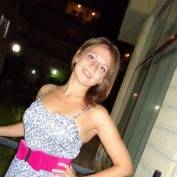

email: koshel.olga86@gmail.com
To start a career in java and kotlin development in a large company with interesting tasks. Grow to the middle level in two years.
Experience in software development since 2008. Development experience mainly in the backend. She was engaged in the development and refinement of the internal systems of the university. Finalized LMS Moodle for distance learning system. In her work she used:
Code examples.
Graduated from Togliatti State University with a degree in “Mathematical Support and Administration of Information Systems”.
English at the level of reading technical documentation.